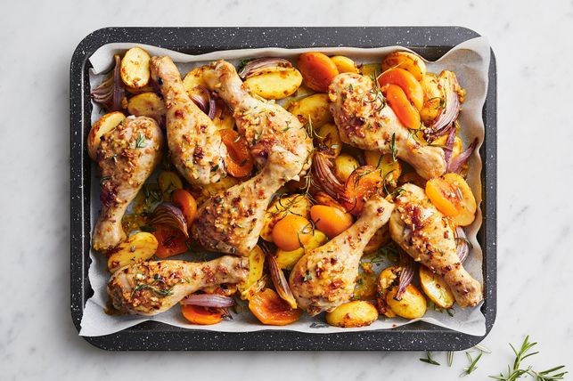

Apricot chicken tray bake

Description
A makeover of a classic, this family favorite apriicot chicken is now an easy traybake.
This super speedy recipe is ready in under an hour
Ingredients
- 695g tub apricot halves in juice
- 4 sprigs fresh rosemary
- 2 tbsp French onion soup mix
- 1 tbsp extra virgin olive oil
- 1kg Lilydale Free Range Chicken Drumsticks (see notes)
- 500g baby chat potatoes, halved
- 1 red onion, cut into thin wedges
Steps
- Preheat oven to 200C/180C fan-forced. Grease a large baking tray with sides. Line tray with baking paper.
- Drain apricots, reserving 1/3 cup juice. Remove leaves from 1 rosemary sprig.
Finely chop. Place soup mix, chopped rosemary, oil and reserved juice in a jug.
Stir until well combined. Arrange chicken, apricots, potato and onion, in a single layer,
on prepared tray. Drizzle over soup mixture. Season with salt and pepper.
- Bake, turning chicken and adding remaining rosemary sprigs halfway, for 45 minutes
or until chicken is cooked through and potato is tender. Serve.